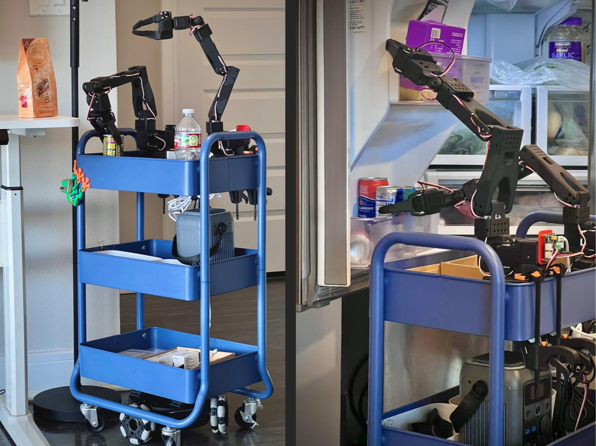

一个面向家庭与教学场景的双臂移动操作平台。构建在 Hugging Face 的 LeRobot 生态之上，联合 SO-100/SO-101 机械臂与 LeKiwi 全向底盘，用约 90% 的 3D 打印件实现整机复现，总组装时间不足 4 小时。
XL + LeRobot ＝ 开源 · 可复现 · 易升级
家庭操控研究长期被高成本商业平台把持，学生、爱好者和小型团队几乎无法进入。XLeRobot 做的事情很直接：把一台能跑模仿学习、能遥操作、能进仿真训练的双臂移动机器人，做成一个普通实验室能自行复现的开源平台。
底盘之上沿用 Hugging Face LeRobot 的技术栈：即插即用的 pip 安装、几行代码即可跑通、大量预训练 VLA 模型与公开数据集可直接下载。你训练好的策略，和全世界 LeRobot 用户用的是同一套格式。
LeRobot 生态擅长桌面单臂/双臂，但缺一台能移动、能进家庭的双臂平台。传统 3D 打印底盘在耐久性、稳定性和负载上都撑不住日常使用，DIY 移动底盘的供电又是一团乱线——「XL」补的正是这块。
官方文档列出的四条主要优势，都围绕「学生能不能自己做出来、做出来能不能用」展开。
90% 的零件为 3D 打印件，配合经济型电机与电子元件，整机可用常见材料与器件自行复现。
硬件无需修改电机 ID；软件与桌面单臂/双臂设置完全一致，SO-101 上训练好的策略可直接迁移。
可完成许多日常任务，任务演示见 LeRobot 全球黑客松；底盘稳定，适合长期在教室内使用。
LeRobot 的即插即用代码与模型库，加上活跃的贡献者社区，硬件 CAD、3D 打印文件全部开放。
核心部件均为成熟开源模块，任意一件损坏都能单独采购替换，这也是它适合进课堂的原因。
同一套硬件、同一批木块，分别用 ACT、SmolVLA、π0.5 三种策略做复现。四段视频都是板端实拍（720×1280 竖屏），可以直接对比不同模型在颜色分辨、抓取稳定性和数据效率上的差别。
采集数据时用了红、粉、蓝三种木块，但复现只有红色稳定成功，粉色与蓝色难以分辨。适合作为「数据集覆盖不足会怎样」的反面案例。
无顶部摄像头时复现效果明显下降：颜色分辨困难，多次抓取方块失败。可据此说明「视角配置本身就是模型输入的一部分」。
三种策略里复现效果最好：操作成功率最高，红、粉、蓝各色方块都能正确识别，且所需数据量最小。
同一策略换到更长的任务链：识别散落物品、逐件拿起、放回固定位置，完整跑通一个桌面整理场景。
这是 XLeRobot 最适合做教学的一条线：控制、遥操作、仿真、训练、部署，每一步都有现成的开源入口。
键盘、Xbox 手柄、Switch Joy-Con（蓝牙直连，无需 WiFi、无延迟）、Quest 3 VR 遥操作，以及训练好的自主策略。教学时先用普通手柄做数据采集，再用 VR 做精细示教。
提供 URDF 与 ManiSkill 仿真支持，含深度、分割、触觉等多种传感器，可用于 RL / IL / VLA 训练。官方称 15 分钟可跑通第一个仿真环境。
基于 LeRobot 的 ACT、Diffusion Policy 等策略训练流程，训练好的模型可导出并在真机部署；Sim2real 迁移在 ManiSkill / Mujoco 中完成。
一条 pip install 加几行代码即可让机器人动起来。软件接口与桌面 SO-101 双臂完全一致，学生学到的操作可以平移到大平台。
官方给出六类用户画像，其中教育与自研是主要落点。
机器人 / AI 课程的经济型平台。整班配置压力小，且硬件可逐台独立维修。
从初学者到研究者都能用：先跑通遥操作，再学数据采集，最后训自己的策略。
用模块化平台快速搭原型，验证算法再决定是否上大平台。
把精力全放在算法上，硬件部分用现成开源方案解决。
把前沿机器人技术带进课堂。低扭矩 + 短臂展，安全性适合未成年学生操作。
植物养护、物品递送、家庭自动化——室内项目几乎都能接。
官方文档自己列出的限制，选型时必须正视，否则会在课堂上踩坑。